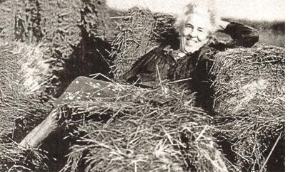
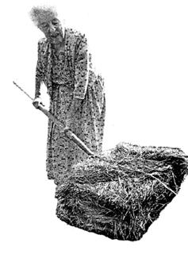
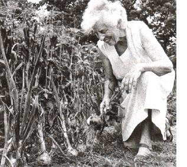

GARDEN &YARD
A generation ago, Ruth Stout was world famous as the "No-Work Gardener." Her secret was a permanent straw or old-hay mulch over everything. She was best known for growing potatoes by "just throwing them" on the ground and covering them with hay. Then, in a couple of months, when tiny new spuds were developing, and onto full harvest time, she'd just "kick the straw aside" and pick potatoes off the ground.
There's not much agronomy to her system, but there is a lot of chatter involving her brother, then-popular mystery writer Rex Stout, Professor Richard Clements, and a large group of friends and correspondents. You'll have to read her delightfully old-fashioned books for the whole entertaining story. See Sources for a welcome new reprint of her delightful 1961 Gardening Without Work for the Aging, the Busy and the Indolent. Miss Stout gardened in a long "house dress" and kept at it till she died at age 91.
I've used her method off and on for years and it works ...most of the time. But I usually end up mulching with half-dollar bales of half-rotted wet hay that won't fluff up like fresh, dry hay or like that straw she talks about just tossin' on and kickin' aside. It peels off the rotten-string-bound bale in fairly dense, four-inch-thick "books" full of mold, mushroom roots, and field mouse nests. These can be laid out on the soil like floor tiles, and will dry and inter mesh to some extent in the wind and sun.
New potato vines can have a struggle getting through the compressed hay. But after pushing some books up an alarm ing inch or two, the plants will manage to work through to the sun, and the books will flatten down. If the straw layer is kept up, potatoes grow at the soil/hay boundary, only half buried in the ground. Planting and harvest are indeed a snap. But toads adore a hay mulched garden, as do slugs and snails.
Drawbacks that never seemed to bother Miss Stout include slugs and snails, cold, wet spring weather, and mice and voles that will tunnel around, safe from predators, under the hay mulch. In wet years, potato sets under a deep mulch will rot before they sprout, and slugs will get what's left; it is best to delay mulching till it warms up or plant well-started sets in bare spots raked out in the straw. In a bad vole year-typically following a short, mild winter-most of the tubers will be nibbled. Shallow wounds will heal over, but deeper ones will admit storage rot, preventing the crop from keeping. In my experience, you can tell if the gardening year will feature a vole explosion if the fishnet-like network of winter-foraging tunnels under the snow -hat's revealed briefly at the end of the -now melt is really extensive, covering :he whole yard and garden. In this case, plant potatoes a good five inches deep in well-tilled bare soil.
Don't put up a scarecrow or you'll scare off hawks and owls that will soar over frequently because it's easy for them to spot marauding rodents on your bare garden soil. Keep the dogs in the back-Yard and the grass cut short in a wide apron all around the garden to deny deep rodent cover (rabbit and woodchuck cover as well), and don't mulch the garden till the ground dries out and rainfall totals less than an inch a week.
You must feed a permanent mulch. While the constant breakdown of the hay into compost attracts earthworms and adds tilth to the soil, it uses up nitrogen that must be replaced. Miss Stout "just threw on" handfuls of cottonseed meal. Any natural nitrogen source will do. Gardening in coastal Maine, I heap the soil with ocean kelp gathered after winter storms. Near the ocean, we can also mulch with salt hay, a species that grows only in the tidal salt marshes. Its seed won't germinate in ordinary garden soil, so weeds are minimal. But it is neither plentiful nor cheap. If you have access to straw-the relatively weed-free stems of harvested wheat or other small grain-use it if the cost isn't prohibitive. Last time I priced straw at a garden center, it cost $5 for a two-third-sized 40-pound bale. At that price, I may take up straw farming.
More readily available (and cheaper) inland hay-even inexpensive, rained-on "mulch hay"-contains weed and hay seeds. And they sprout. By the millions. If permitted to grow, your garden will become a perennial hayfield in a week's time. I learned from Lyman Wood, a contemporary of Miss Stout's and founder of the Garden Way Companies, that when weeds in the hay sprout, you just go along the row with a pitchfork, lifting the hay and dropping it to smash down the new growth. You may have to perform such cultivation several times in a season. But it's a whole lot easier than hoeing or tilling.
I've also found that, after a soaking rain, you can go along a mulched row with a little propane flame-weeder and shrivel new hay and weed sprouts to a frazzle. The wet hay or stout potato vines won't shrivel or catch fire. Unfortunately, the old vines can't be burned in the fall without taking the mulch with them. But the ash will sweeten soil for the green manure or small-grain crops that should follow spuds-straw-mulched or not.
Modern agronomists have tested the hay mulch method and found production to be at least equal to in-soil planting especially in the South where a deep mulch can keep soil closer to potato's preferred around 50°F temperatures. In the North, particularly during a long, cool, and wet spring, it can keep soil too wet and cool for top production.
If you try the Stout method, the agricultural school experts recommend spreading eight to ten inches of loose straw or hay over seed potatoes and then maintaining a settled-hay mulch of four inches. Of course, dear Ruth never bothered to measure.
|
 We're cheating a bit by showing Ruth mulching onions rather than 'taters, but it's one of our favorite photos of her. |
 |
 |